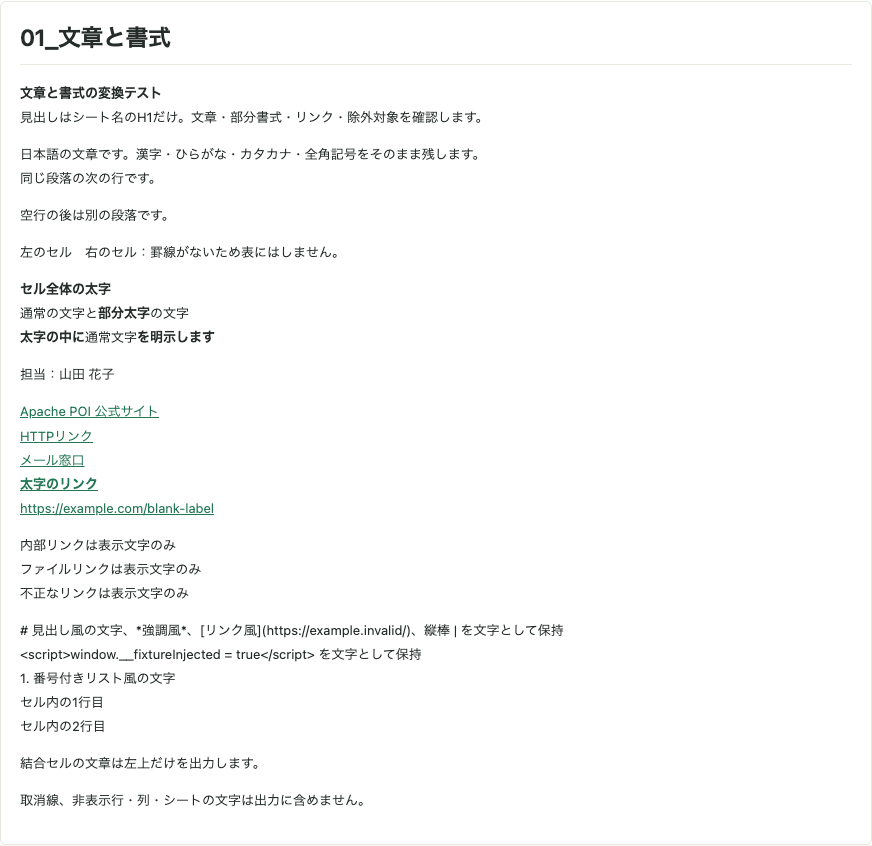
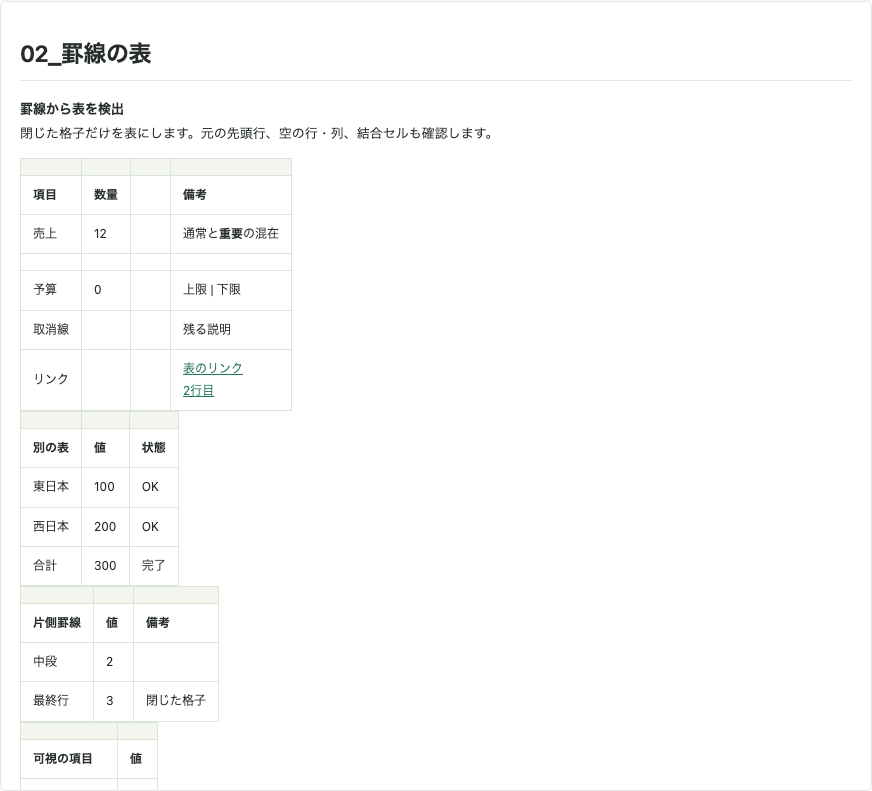
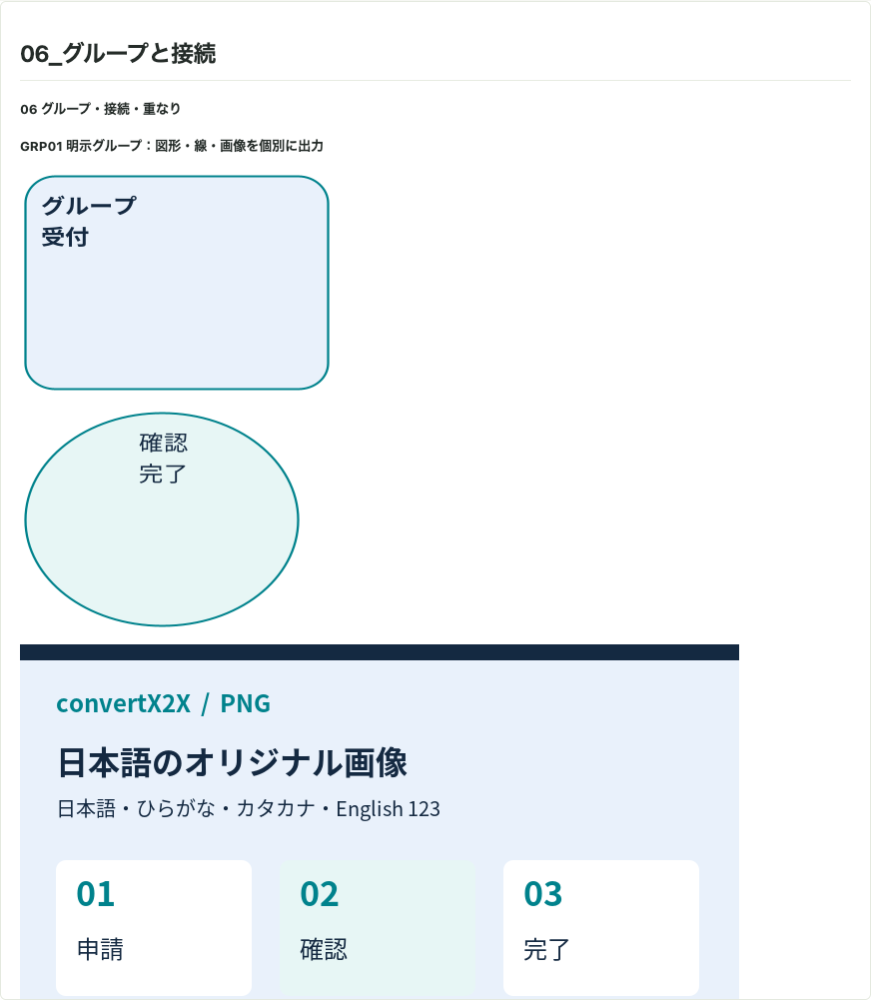
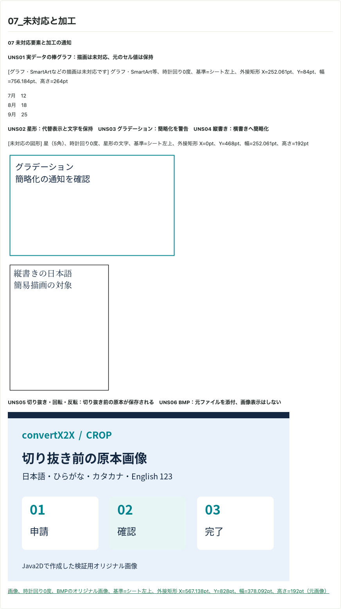
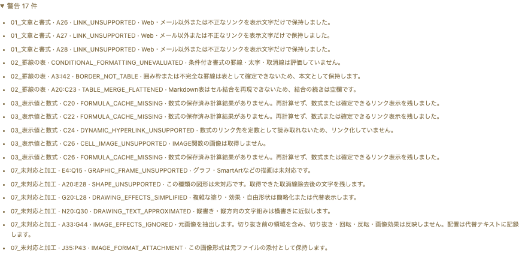
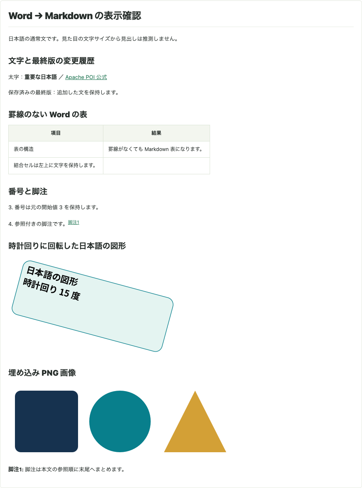
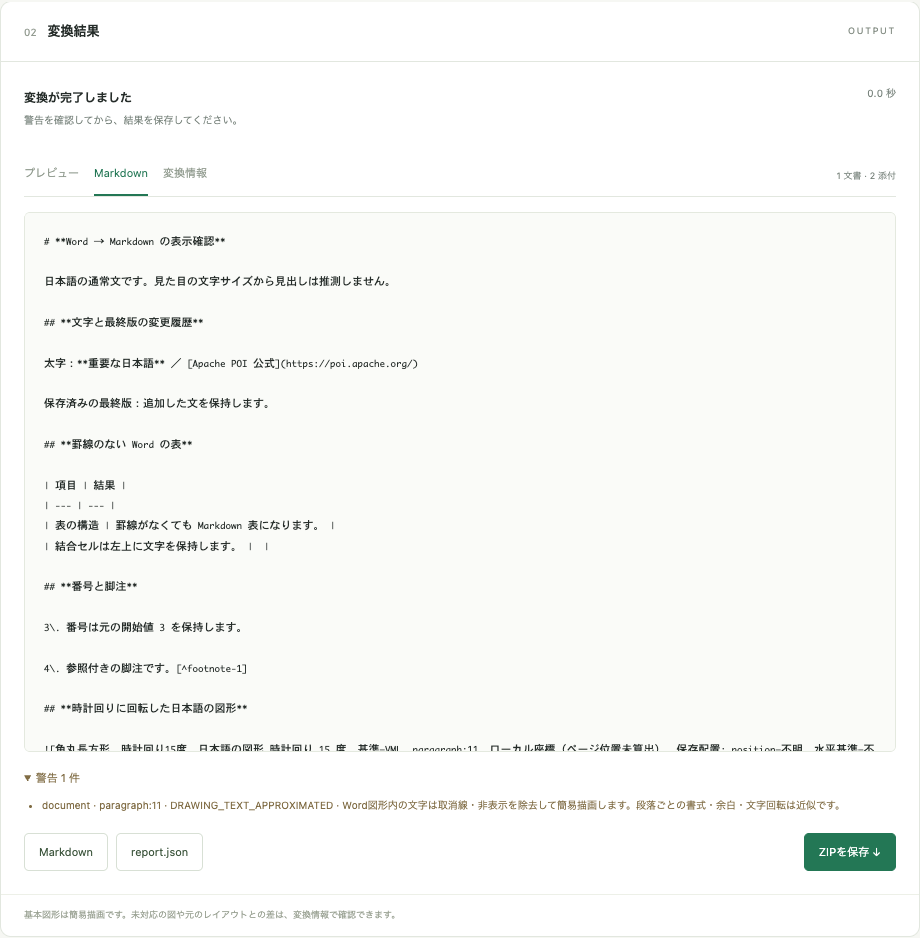
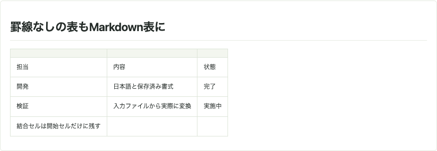
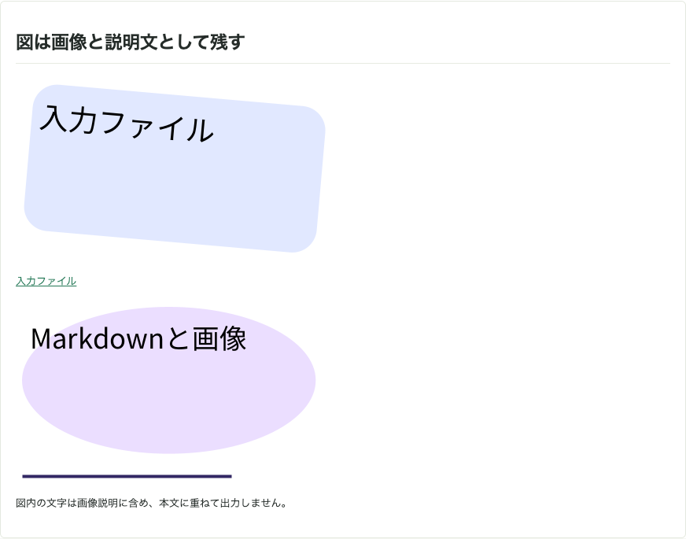

Office → Markdown / Actual examples
実際の変換例
複数シートのExcel、変更履歴を含むWord、グループ図形を含むPowerPointを、実際のAPIとPlaygroundで変換しました。入力・変換結果・警告をまとめて確認できます。
すべてこのリポジトリで作成したオリジナル資料です。掲載画像は実行後のPlaygroundを撮影したもので、変換結果の文章や図を補正していません。出力ZIPには document.md・report.json・images/ が入っています。
Excel：13シートの包括例
文章、7個の表、数式キャッシュ、図形・画像、非表示・未対応要素を一度に確認。
Word：変更履歴と脚注
見出し、罫線なしの結合表、番号、脚注、回転図形と画像。
PowerPoint：表と個別図形
4表示＋1非表示スライド。グループの図形・接続線・リンク・日本語を抽出。
このページは同期HTTPの実行例です。非同期HTTP・直接Queueも同じ変換コアを使いますが、ここでQueue経由の動作やAzure上の性能を測定したものではありません。Markdownでは元資料の横並び・重なりを再現せず、位置情報を図形のaltテキストへ残します。
Excel：文章・表・図形・未対応要素を含む13シート
13シートから、出力内容のある8シートを残します。非表示2シートと空・取消線のみ・罫線のみの3シートは除外されます。7個の罫線表、部分太字・リンク・取消線、結合セル、保存済みの数式結果、画像の重複、入れ子グループ・回転・接続線・未対応グラフを同じファイルに含めています。
{kind=link}

{kind=link}

{kind=link}
{kind=link}

{kind=link}
{kind=link}

数式は再計算しません。1+2 に意図的に保存したキャッシュ 999 は、出力も 999 です。IMAGE 関数の画像は取得せず未対応表示になります。34アセットにはPNG/JPEGとBMP添付を含み、同一画像の複数配置では画像ファイルを共有します。
実際のMarkdown抜粋：表
| | | | |
| --- | --- | --- | --- |
| **項目** | **数量** | | **備考** |
| 売上 | 12 | | 通常と**重要**の混在 |
| | | | |
| 予算 | 0 | | 上限 \| 下限 |
| 取消線 | | | 残る説明 |
| リンク | | | [表のリンク<br>2行目](https://example.com/table) |
| | | |
| --- | --- | --- |
| **別の表** | **値** | **状態** |
| 東日本 | 100 | OK |
| 西日本 | 200 | OK |
| 合計 | 300 | 完了 |
| | | |
| --- | --- | --- |
| **片側罫線** | **値** | **備考** |
| 中段 | 2 | |
| 最終行 | 3 | 閉じた格子 |
| | |
| --- | --- |
| **可視の項目** | **値** |
| 表示される行 | 42 |
| 末尾 | 43 |
| | | |
| --- | --- | --- |
| **結合した見出し** | | |
| A項目 | 10 | 完了 |
| B項目 | 20 | 確認中 |
| C項目 | 30 | 完了 |
| **商品名** | **個数** | **単位** |
| --- | --- | --- |
| りんご | 3 | 個 |
| みかん | 5 | 個 |
| バナナ | 2 | 本 |
スタイルだけの表 値 備考
データA 10 直接罫線なし
データB 20 文章として出力
データC 30
**単一セルの囲みは文章** **閉じていない罫線** **値** **備考**
途中の行 10 文章として保持
最終の行 20 右下の外周が欠ける
下線だけでは表にしません
条件付き書式の見た目は再評価せず、通常の保存値と直接書式を使います。
100実際のMarkdown抜粋：数式キャッシュと外部画像
保存キャッシュ999（数式は1\+2） 999
数式の通貨表示 ¥12,345
キャッシュなしの数式 =1\+2
リンク先と表示が文字列リテラル [数式の公式リンク](https://poi.apache.org/spreadsheet/)
リンク先は固定、表示は保存値 [保存されたリンク表示](https://example.com/cached)
リンク先が動的ならリンク化しない 動的なリンク表示
IMAGE関数は取得しない \[セル内画像: 未対応\]
取消線がある数値も除外実際のreport.json抜粋：未対応・近似の警告
[
{
"code": "TABLE_MERGE_FLATTENED",
"section": "02_罫線の表",
"range": "A20:C23",
"message": "Markdown表はセル結合を再現できないため、結合の続きは空欄です。"
},
{
"code": "CELL_IMAGE_UNSUPPORTED",
"section": "03_表示値と数式",
"range": "C26",
"message": "IMAGE関数の画像は取得しません。"
},
{
"code": "GRAPHIC_FRAME_UNSUPPORTED",
"section": "07_未対応と加工",
"range": "E4:Q15",
"message": "グラフ・SmartArtなどの描画は未対応です。"
},
{
"code": "DRAWING_TEXT_APPROXIMATED",
"section": "07_未対応と加工",
"range": "N20:Q30",
"message": "縦書き・縦方向の文字組みは横書きに近似します。"
},
{
"code": "IMAGE_EFFECTS_IGNORED",
"section": "07_未対応と加工",
"range": "A33:G44",
"message": "元画像を抽出します。切り抜き前の領域を含み、切り抜き・回転・反転・画像効果は反映しません。配置は代替テキストに記録します。"
}
]{kind=link}

Playground全体 · Markdownタブの画面。入力の3か所の説明ラベルは、現在の「図形ごとの出力」に合わせています。数式・図形・書式等の構造は元の包括サンプルと同じです。
{kind=link}
{kind=link}
Word：変更履歴・結合表・脚注・回転図形
H1/H2の明示的な見出し、太字とリンク、取消線、挿入・削除の変更履歴、罫線なしの結合表、3から始まる番号、脚注、15度回転した日本語の図形、埋め込みPNGを含む文書です。
{kind=link}

{kind=link}

Wordは印刷ページを画像化していません。本文の構造をMarkdownにし、回転図形は近似描画します。この例の図形はページ上の絶対座標を持たないため、altにも「ページ位置未算出」「位置・サイズ不明」と明記されます。
実際のMarkdown全文
# **Word → Markdown の表示確認**
日本語の通常文です。見た目の文字サイズから見出しは推測しません。
## **文字と最終版の変更履歴**
太字：**重要な日本語** ／ [Apache POI 公式](https://poi.apache.org/)
保存済みの最終版：追加した文を保持します。
## **罫線のない Word の表**
| 項目 | 結果 |
| --- | --- |
| 表の構造 | 罫線がなくても Markdown 表になります。 |
| 結合セルは左上に文字を保持します。 | |
## **番号と脚注**
3\. 番号は元の開始値 3 を保持します。
4\. 参照付きの脚注です。[^footnote-1]
## **時計回りに回転した日本語の図形**

## **埋め込み PNG 画像**

[^footnote-1]: 脚注は本文の参照順に末尾へまとめます。実際のreport.json：図形文字の近似警告
[
{
"code": "DRAWING_TEXT_APPROXIMATED",
"section": "document",
"range": "paragraph:11",
"message": "Word図形内の文字は取消線・非表示を除去して簡易描画します。段落ごとの書式・余白・文字回転は近似です。"
}
]{kind=link}
{kind=link}
{kind=link}
PowerPoint：罫線なし表・グループ・接続線・非表示要素
5枚のうち4枚が表示スライドです。日本語・番号・箇条書き・リンク・取消線、罫線のない結合表、5度回転した角丸図形と楕円・接続線のグループ、非表示図形、ノート、埋め込み画像を含みます。
{kind=link}

{kind=link}

非表示スライド・非表示図形・ノート・取消線文字は、この例のMarkdownに含まれません。図形内のリンクは画像の後に通常リンクとして残ります。入力スライド全体の画像ではなく、文章・表・図形を分けた成果物です。
実際のMarkdown全文：図形名・回転・文字・座標を含む
# PowerPointからMarkdownへ
日本語の本文・箇条書き・表・図・画像の実変換サンプルです。
3\. 保存した番号を保つ
4\. 外部コンテンツを取得しない
- 日本語と English ABC123 を保持
[資料へのリンク](https://example.com/reference)
# 罫線なしの表もMarkdown表に
| | | |
| --- | --- | --- |
| 担当 | 内容 | 状態 |
| 開発 | 日本語と保存済み書式 | 完了 |
| 検証 | 入力ファイルから実際に変換 | 実施中 |
| 結合セルは開始セルだけに残す | | |
# 図は画像と説明文として残す

[入力ファイル](https://example.com/input)


図内の文字は画像説明に含め、本文に重ねて出力しません。
# 保存済みの埋め込み画像
実際のreport.json：表の結合を平坦化した警告
[
{
"code": "TABLE_MERGE_FLATTENED",
"section": "スライド2",
"range": "shape-3",
"message": "Markdown表では結合の開始セルだけに内容を残します。"
}
]{kind=link}
{kind=link}
{kind=link}
{kind=link}
再現方法と記録の読み方
2026年9月16日に、macOS arm64 / Java 21 / Azure Functions Core Tools のローカルホストで実行しました。POST /api/convert?filename=input.xlsx 等へファイル全体を送信し、HTTP 200のZIPを保存しています。オプションは既定値です。認証キーや外部Storageの設定は実行記録に含めていません。
curl --fail-with-body \
-H 'Content-Type: application/octet-stream' \
--data-binary @docs/APIDocs/office2md/examples/excel-complex/input.xlsx \
'http://localhost:7072/api/convert?filename=input.xlsx' \
-o result.zip各 run.json に入力・出力ZIP・展開ファイル・スクリーンショットのSHA-256、HTTP結果、実行環境を保存しています。記録された時間はローカルの送信からZIP展開・プレビュー生成までで、Azureの起動時間・ネットワーク・同時処理性能の目安にはなりません。
セクション別のスクリーンショットは、実際のプレビューのスクロール領域と画像の高さ上限を広げ、ほかのセクションを一時的に非表示にして撮影しました。Excelの表・グループの詳細画像は、それぞれ先頭790px・1000pxの切り出しです。本文・画像・成果物は変更していません。通常の画面も各ケースの「Playground全体」で確認できます。
再現・検証手順 · 実行と撮影のスクリプト · 入力コピーの作成手順 · 図形の変換ルール · HTTP API仕様